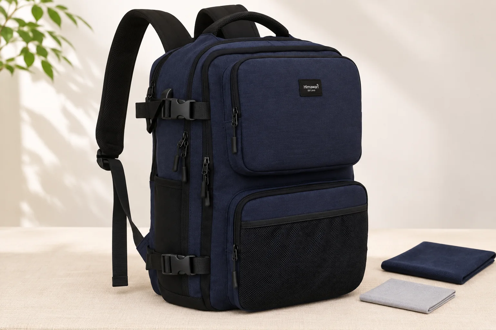
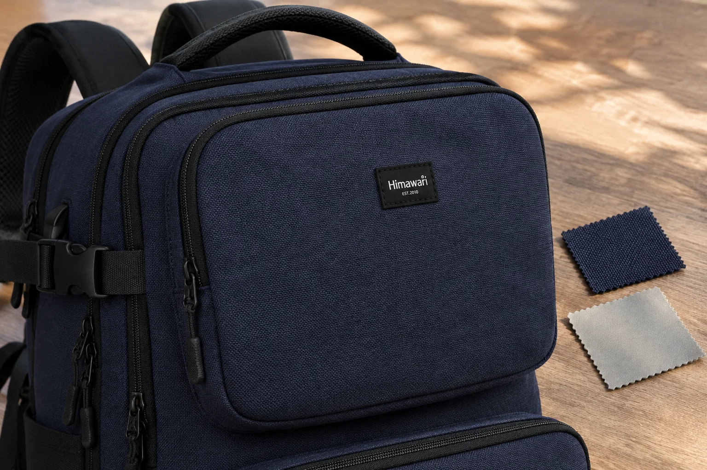
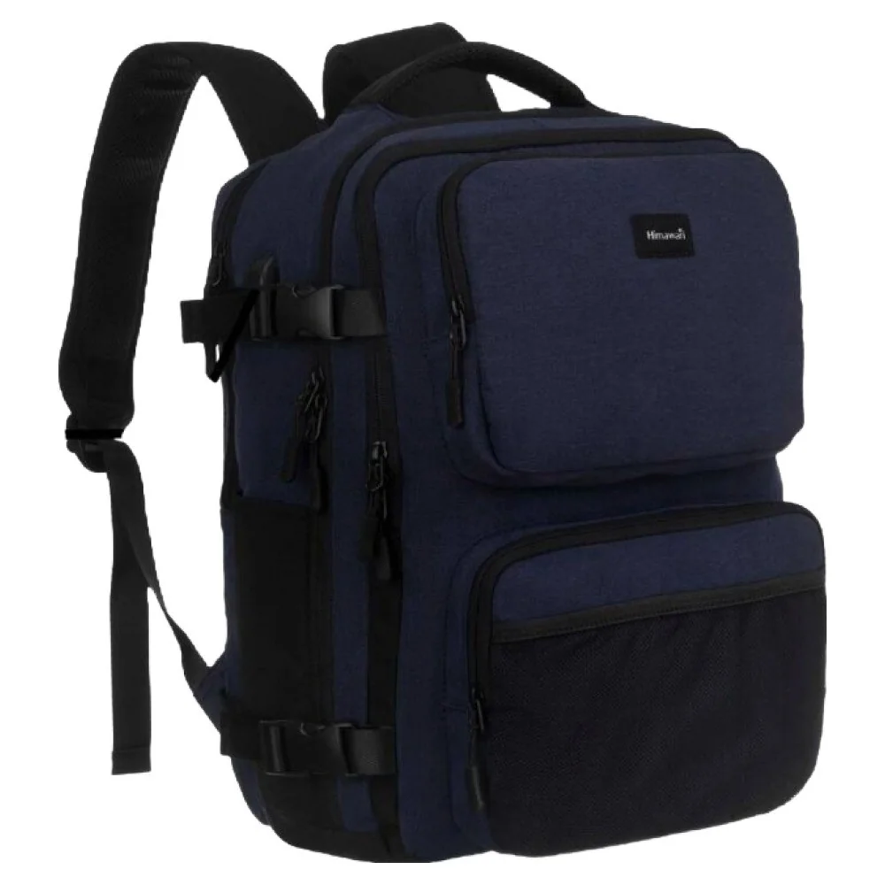

백팩의 겉감과 안감, 코팅은 어디에 있는 걸까

백팩 사양표에 겉감과 안감이 모두 폴리에스터라고 적혀 있으면 같은 천을 두 겹 썼다고 생각할 수 있습니다. 그러나 섬유 이름이 같다는 정보만으로 원단의 두께와 짜임, 표면 처리까지 같다고 알 수는 없습니다.
겉감과 안감은 가방에서 맡은 위치를 부르는 말이고 코팅은 원단에 더한 처리를 가리킵니다. 어느 층의 무엇을 설명하는지 나누면 소재 표기를 읽기가 한결 수월합니다.
No.2301 네이비의 공개 정보에는 외부 크기 가로 28 × 세로 42 × 폭 17cm, 겉감과 안감 모두 폴리에스터라고 적혀 있습니다. 실제 제품 사진에서는 네이비 몸판, 검정 테두리, 앞의 큰 네모 포켓과 아래쪽 메쉬가 보입니다. 이 글은 닫힌 겉모습으로 내부 층을 판정하지 않고 확인된 소재 표기를 출발점으로 단어들이 어디를 가리키는지 살펴봅니다.
겉감은 바깥면, 안감은 안쪽에 덧대는 천
겉감은 가방 바깥 몸판을 이루는 원단을 설명할 때 쓰는 이름입니다. 안감은 안쪽 면에 덧대는 천을 가리킵니다.
천 한 장에도 앞면과 뒷면이 있지만 그 뒷면을 곧바로 안감이라고 부르는 것은 아닙니다. 별도 천을 덧댄 구조와 원래 천의 두 면을 구별해야 합니다. 안쪽 사진을 볼 때 천이 따로 이어지는 경계가 있는지, 단순히 같은 천이 접혀 돌아온 자리인지 나누어 볼 이유입니다.
주머니가 붙은 곳에서는 공간도 함께 구분합니다. 겉에서 보이는 주머니 앞면과 그 뒤의 가방 몸판은 사진에서 겹칠 수 있습니다. 그 사이가 물건을 넣는 공간인지, 원단끼리 맞닿은 연결부인지에 따라 같은 두 겹이라는 말도 다른 구조를 가리킵니다. No.2301의 앞 메쉬와 그 뒤에 보이는 면을 소재의 단면처럼 세지 않는 이유입니다. 포켓의 앞뒤 배치와 몸판의 겉감·안감 층은 질문이 다릅니다.
안쪽에 보이는 천도 위치를 함께 봅니다. 큰 수납실의 벽면인지 작은 주머니의 바깥면인지, 원단이 접혀 두 면이 맞닿는 곳인지에 따라 설명할 대상이 달라집니다. 밝은 천이 조금 보인다는 이유로 가방 안감 전체가 같은 색이라고 일반화하지 않습니다. 특히 다른 색상 옵션의 내부 사진을 참고했다면 현재 고른 옵션도 같은 구성인지 따로 맞춰 봅니다.

코팅은 세 번째 주머니가 아니다
코팅이라는 표현은 원단에 처리한 층을 설명할 수 있습니다. 안감처럼 따로 재단한 천을 가방 안에 봉제한다는 말과는 뜻이 다릅니다.
원단 공급사 CORDURA는 자사의 Classic 원단이 필요에 따라 코팅되거나 라미네이팅될 수 있다고 안내합니다. 이는 원단 이름과 후가공이 별도의 정보라는 예입니다. No.2301에 그 회사의 원단을 사용했다는 근거로 옮겨 쓰지는 않습니다.
안감이 있어 원단의 뒷면이 가려진 백팩이라면 겉모습과 안쪽 사진만으로 그 사이 처리를 알아보기 어려울 수 있습니다. 보이지 않는 층을 확인하려고 봉제를 뜯을 필요는 없습니다. 코팅의 유무와 처리한 부위, 제품에서 공개하는 소재 설명을 판매처에 문의하면 됩니다. 자료가 없다면 확인하지 못한 항목으로 남깁니다. 실제 구성과 다른 단면을 그려 넣는 것보다 정확합니다.
여기서 라미네이팅이라는 말까지 만났다면 어떤 층을 결합했는지 설명을 읽습니다. 코팅과 라미네이팅을 항상 같은 작업이라고 바꿔 쓰거나 어느 쪽이 더 좋다고 정하지 않습니다. 처리 이름만으로 원단의 두께와 유연성, 완성된 가방의 성능을 모두 알 수는 없습니다. 자신에게 필요한 정보가 표면의 관리인지 완성품의 사용 조건인지부터 정합니다. 그에 맞는 자료를 찾는 편이 효율적입니다.

단면 그림을 읽을 때는 대상 제품을 맞춘다
다른 원단의 단면 그림은 겉면과 뒷면을 이해하는 데 쓸 수 있지만 지금 보고 있는 백팩의 설계도는 아닙니다. 그림 속 격자나 막이 선명하더라도 해당 가방의 제품 자료가 그 구성을 확인하는지 먼저 봅니다. 여러 색으로 구분한 일반적인 층 그림을 모든 백팩에 그대로 대입하면 없는 층을 실제 사양처럼 기억하기 쉽습니다. 그림의 설명 대상과 제품명이 이어져 있어야 합니다.
No.2301의 사진에서 네이비 면과 검정 메쉬가 나란히 보이는 일은 외부 배치를 알려줍니다. 메쉬 아래로 원단이 보인다고 방수막의 단면을 본 것은 아닙니다.
주머니 표면과 그 뒤 몸판이 겹쳐 보이는 장면일 수도 있으므로 무엇이 겹친 면인지 확인할 자료가 필요합니다. 본문의 별도 천 조각은 이 구분을 설명하는 연출 소품이며 실제 백팩에서 떼어 낸 소재 견본이 아닙니다.
설명 자료를 받았을 때에도 사진과 문장을 따로 맞춰 볼 수 있습니다. 겉감 설명에는 어느 몸판 사진이 연결되는지, 안감 설명에는 실제 수납실 사진이 있는지 봅니다.
코팅을 안내한다면 처리 위치를 특정하는 문장이 있는지 찾습니다. 각각의 답이 모이면 소재표의 두 줄과 원단 후가공의 관계를 이해할 수 있습니다. 사진의 광택을 근거로 화학 성분을 대신 적을 필요는 없습니다.
관리는 가방에 안내된 범위를 따른다
같은 섬유 이름을 쓴 천도 부자재와 표면 처리, 봉제된 형태가 다르면 완성품의 관리 조건은 별도로 확인해야 합니다. 원단 공급사의 세탁 예시를 완성된 백팩에 그대로 적용하지 않습니다. 안감만 만질 계획이어도 주변 봉제부와 바깥 원단이 함께 젖을 수 있습니다. 백팩의 안내에서 허용하는 범위를 먼저 읽습니다. 특정 층이 눈에 안 보인다고 관리 과정에서 영향을 받지 않는 것은 아닙니다.
No.2301의 현재 관리 안내는 부드러운 천으로 부분 관리한 뒤 그늘에서 건조하고 세탁기와 건조기를 피하라고 제시합니다. 겉감과 안감이 모두 폴리에스터라는 이유로 이 안내를 세탁기 사용 가능으로 바꿔 읽지는 않습니다. 코팅 여부가 궁금하다면 관리제를 바르거나 천을 긁어 확인하기보다 처리 위치와 관리 방법을 함께 물어볼 수 있습니다.
가방을 고르며 남길 그림에는 실제 확인한 경계만 표시해도 충분합니다. 바깥 몸판, 안쪽에 따로 덧댄 천, 별도의 주머니 공간을 나누고 처리층은 자료가 있을 때만 더합니다. 코팅을 한 층으로 표시했다고 그 층 사이에 물건을 넣는 공간이 생기지는 않습니다. 겉감과 안감이라는 두 이름을 주머니 두 개로 세거나 원단의 앞뒤를 별도 소재로 세지 않아야 가방의 구조를 설명하는 말도 정확해집니다.